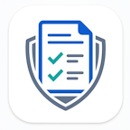

Smart Release ReportDocumentation
Turn a Jira project version into release notes your customers and teams can understand. Review the issues, refine summaries, then copy the result or publish it to Confluence.
Last updated: October 2026
Quick start
- Open the app in a Jira project. The app detects the project from the page where it is opened.
- Choose a version. Select a project version from the release menu. Archived versions are not shown.
- Review the issues. Check the category, status, priority, and any technical-wording warning. Use the filters and sort controls to focus the list.
- Refine summaries if needed. Select Edit summary, make the release-note wording clear, and save.
- Choose an output. Open Export to preview and copy Markdown or Slack/Teams formatting, or publish a page to Confluence.
Review issues and filters
Issues are collected from the selected Jira version's Fix Version/s field. The app groups the review list into release categories based on Jira issue type:
| Release category | Typical Jira issue types |
|---|---|
| Features | Story, New Feature, Epic |
| Bug Fixes | Bug, Defect, Incident |
| Improvements | Task, Improvement, Maintenance, Sub-task, and other or unrecognized types |
Use the category cards under Overview to show or hide each category. The category sections in the issue list can also be collapsed. Select an issue key to open the Jira issue.
Technical wording
The app looks for common technical signals in issue summaries, such as code-style identifiers, file extensions, exception names, and engineering terms. The Technical wording card shows how many visible issues are flagged. This is a lightweight heuristic, not an AI rewrite or a guarantee that wording is customer-ready.
Technical wording is included by default. Turn off its Overview filter to hide flagged issues from the review list and generated output. A warning does not block copying or publishing, so review flagged summaries before sharing.
Internal work
Issues whose summaries start with common engineering prefixes such as chore:, refactor:, test:, or ci: are identified as internal work and hidden by default. Use the Internal work card to include or hide them. This filter is independent of the technical-wording filter; an issue can match either, both, or neither.
Sorting
The issue list defaults to Requires Review, which brings technical-wording warnings forward. The Sort by menu also offers issue key, issue type, status, priority, and internal work. Use the adjacent direction button to switch between ascending and descending order.
Edit release summaries
Editing a summary changes the wording used by Smart Release Report for that Jira issue and selected version; it does not edit the Jira issue itself. Changes are saved to Forge-hosted app storage and are used again when that issue is loaded for the same project and version.
After saving, review the issue again: changing its summary can affect its technical-wording warning and whether it is identified as internal work.
Export and publish
Copy Markdown or Slack/Teams
- Open Export and select Preview Markdown or Preview Slack/Teams.
- Review the preview and any technical-wording notice.
- Select the copy button in the preview to copy the formatted release notes to your clipboard.
The generated content follows the selected category, technical-wording, and internal-work filters. The sort order is used for the output as well.
Publish to Confluence
- Open Export, then select Publish to Confluence.
- Choose a space and, optionally, a parent page. Leave the parent unselected to create the release page at the space root.
- Select Create release page and wait for the success message. Use its link to open the page.
The new page title is the selected version name followed by “Release Notes.” If a page with that title already exists in the selected space, the app offers to update it instead. Confirm Update page (or Update and move page if you chose a different parent) to replace its release-note content; choose Cancel update to leave the existing page unchanged.
Confluence publishing uses your Atlassian access. If the Confluence space or pages do not load, ask your site administrator to verify your Confluence access and that the app is installed for Confluence on the same site as Jira.
Saved preferences and data
- Review preferences—selected version, sort order, category and wording filters, internal-work visibility, and Confluence destination—are saved in your browser for the Jira site and project.
- Edited summaries are saved in Forge-hosted app storage for the project, version, and issue.
- Generated release notes are prepared in your browser. They are sent to Confluence only when you choose to publish or update a page.
For full details about permissions, data access, storage, and retention, see the Privacy Policy and Data Access, Storage & Retention.
Troubleshooting
The app asks me to open a Jira project
Open Smart Release Report from a Jira project page. The app uses that page's project context to load versions and issues.
No versions are available
Create a version in the Jira project's settings, then retry the app. Archived versions are not included in the version selector.
A version has no issues
Check that the relevant Jira issues have the selected version in their Fix Version/s field. Also check the category and wording filters if issues are assigned but not visible.
Jira or Confluence data fails to load
Use the app's Retry control. If the issue continues, confirm your Jira project or Confluence space access with your site administrator. Confluence publishing additionally requires the app to be installed for Confluence on your site.
Copying an export does not work
Try the copy button again and allow clipboard access in your browser. If the problem continues, reopen the preview and retry.
Current limits
Issue categorization and technical/internal-work detection are rule-based. Review the output for accuracy and suitability before sharing it with customers or publishing it.